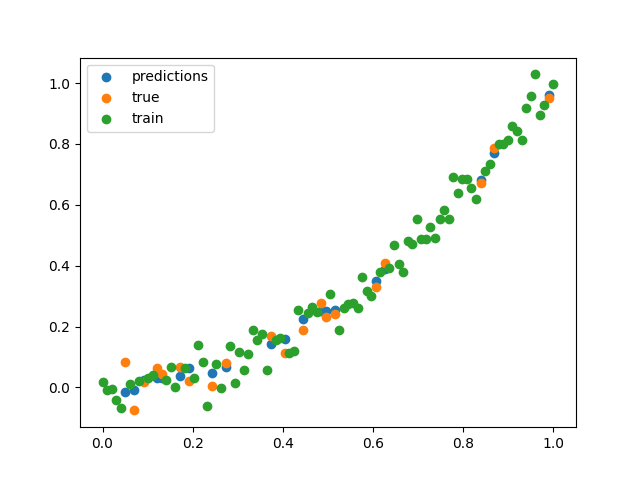

Note
Go to the end to download the full example code.
K-Nearest Neighbors (KNN) Classification and Regression
This script demonstrates the use of K-Nearest Neighbors (KNN) for both classification and regression tasks using the KNNClassifier and KNNRegressor models. It also showcases model serialization with save_model.
tensor([[0.8000, 0.2000, 0.0000],
[0.0000, 0.6800, 0.3200],
[0.0000, 0.4800, 0.5200],
[0.8000, 0.2000, 0.0000],
[0.2800, 0.6400, 0.0800],
[0.0000, 0.3600, 0.6400],
[0.0000, 0.5400, 0.4600],
[0.0000, 0.2200, 0.7800],
[0.8000, 0.2000, 0.0000],
[0.8000, 0.2000, 0.0000],
[0.0000, 0.7400, 0.2600],
[0.0000, 0.7600, 0.2400],
[0.0000, 0.2200, 0.7800],
[0.0000, 0.5200, 0.4800],
[0.0000, 0.4600, 0.5400],
[0.1600, 0.6800, 0.1600],
[0.8000, 0.2000, 0.0000],
[0.0000, 0.2800, 0.7200],
[0.0000, 0.2400, 0.7600],
[0.8000, 0.2000, 0.0000],
[0.8000, 0.2000, 0.0000],
[0.0000, 0.2800, 0.7200],
[0.0000, 0.7400, 0.2600],
[0.0000, 0.5800, 0.4200],
[0.8000, 0.2000, 0.0000],
[0.0000, 0.7400, 0.2600],
[0.8000, 0.2000, 0.0000],
[0.8000, 0.2000, 0.0000],
[0.0000, 0.7000, 0.3000],
[0.0000, 0.3200, 0.6800]])
1.0
import torch
import matplotlib.pyplot as plt
from sklearn import datasets
from DLL.Data.Metrics import accuracy
from DLL.Data.Preprocessing import data_split
from DLL.MachineLearning.SupervisedLearning.Neighbors import KNNClassifier, KNNRegressor
from DLL.DeepLearning.Model import save_model, load_model
torch.manual_seed(0)
iris = datasets.load_iris()
X = torch.tensor(iris.data, dtype=torch.float32)
y = torch.tensor(iris.target, dtype=torch.float32)
# X = X[y != 2]
# y = y[y != 2]
X_train, y_train, X_test, y_test, _, _ = data_split(X, y)
model = KNNClassifier(k=50, metric="manhattan")
model.fit(X_train, y_train)
predictions = model.predict(X_test)
print(model.predict_proba(X_test))
print(accuracy(predictions, y_test))
# save_model(model, filepath="./Tests/Neighbours/classifier.pkl")
X = torch.linspace(0, 1, 100)
y = X ** 2 + torch.randn_like(X) * 0.05
X = X.unsqueeze(1)
X_train, y_train, X_test, y_test, _, _ = data_split(X, y)
model = KNNRegressor(k=5, metric="manhattan", weight="gaussian")
model.fit(X_train, y_train)
predictions = model.predict(X_test)
# save_model(model, filepath="./Tests/Neighbours/regressor.pkl")
plt.scatter(X_test, predictions, label="predictions")
plt.scatter(X_test, y_test, label="true")
plt.scatter(X_train, y_train, label="train")
plt.legend()
plt.show()
Total running time of the script: (0 minutes 3.847 seconds)